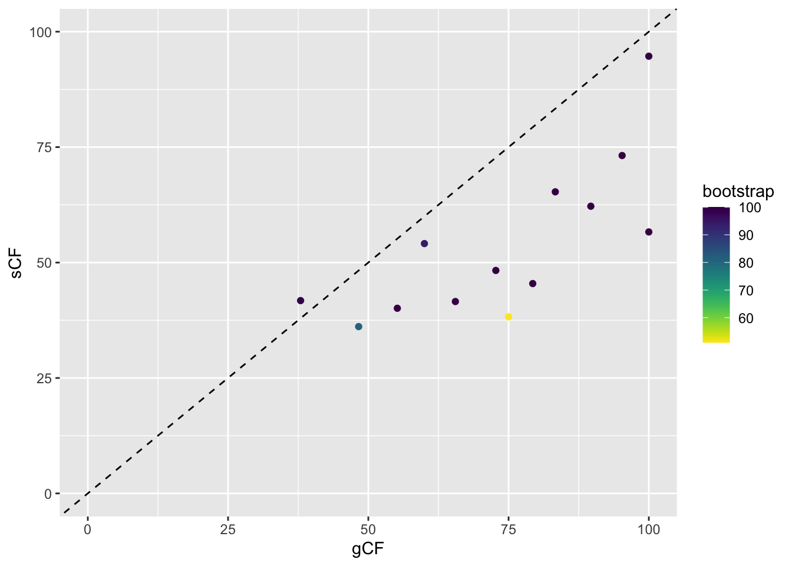

require(viridis)
require(GGally)
require(entropy)
require(ggtree)
require(treeio)
require(tidytree)
require(ggplot2)
require(dplyr)
require(ggrepel)Acknowledgements
References for this Material:
The Gene Tree species tree tutorial by Bui Minh http://www.iqtree.org/workshop/molevol2022. Please see for more information.
And Rob Lanfearʻs excellent blog post about concordance factors http://www.robertlanfear.com/blog/files/concordance_factors.html with R code to help with analysis.
See Methods Paper: Bui Quang Minh, Matthew W Hahn, Robert Lanfear New Methods to Calculate Concordance Factors for Phylogenomic Datasets Molecular Biology and Evolution, Volume 37, Issue 9, September 2020, Pages 2727–2733, https://doi.org/10.1093/molbev/msaa106
Learning objectives
Learning objectives
At the end of this lesson you will:
- Understand where user-installed software goes on your computer
- Be able to install software and update the search paths to run from the command line
- Run iqtree2 from the command line on your own computer
Setup iqtree software
Instructions for installing IQTREE2 and setup for this lession were provided in the previous lesson.
Setup your Tutorial Folder
Make a TurtleTutorial folder, add the following files/folders:
- Make an
inputfolder and put these files into it:- turtle.fa : A sequence alignment (in FASTA format) which is a subset of the original dataset used to assess the phylogenetic position of Turtles relative to Crocodiles and Birds Chiari et al., 2012.
- turtle.nex : The partition file (in NEXUS format) defining 29 genes, which are a subset of the original dataset of 248 genes.
- turtle.fa : A sequence alignment (in FASTA format) which is a subset of the original dataset used to assess the phylogenetic position of Turtles relative to Crocodiles and Birds Chiari et al., 2012.
- The R script
concordance.R - iqtree shell script:
iqtreerun.sh - If you donʻt want to setup IQTREE2 and infer the phylogenies yourself, you can clone the repo (or clone the repo, delete the out files, and run the phylogenies yourself)https://github.com/mbutler808/TurtleTutorial
R packages you will need
viridisGGallyentropyggplot2dplyrggrepel
Overview
When inferring phylogenies from sequence data, it is important to provide support values, usually at the nodes, to indicate how much evidence there is for each split along the phylogeny. The most common and familar are nodal support values - bootstrap support in percent for maximum likelihood trees, and posterior probability for trees inferred by Bayesian inference.
IQTREE2 is software for the inference of phylogenies by Maximum Likelihood (Minh et al. 2020). Several additional modules are bundled with IQTREE2. ModelFinder searches for the best substition models prior to phylogenetic inference (Kalyaanamoorthy et al. 2017). ModelFinder can also combine partitions to reduce overparameterization, similar to PartitionFinder (Lanfear et al. 2016).
There is an increasing recognition that nodal support is not enough. Most phylogenetic analyses are now multi-locus, with data from several to hundred of genes. More studies are discovering that not all of the loci may agree – sometimes certain loci will support one topology whereas others may support an alternative topology. This is called gene-tree species-tree discordance. It can arise by evolutionary mechanisms such as incomplete lineage sorting when you have rapid radiation (short branch lengths in parts of the tree), where ancestral alleles do not have sufficient time to sort themselves out amongst the descendant lineages to reflect the history of cladogenesis, or it can arise by noisy data. Either way, if you have gene-tree species-tree discordance, it will erode support at nodes, or in the worst case, appear to strongly support a spurious evolutionary scenario. We can test for concordance between gene trees and species trees (Minh, Hahn, and Lanfear 2020)
In this module we will learn how to use IQTREE2 to infer phylogenetic trees (both species trees and gene trees), and compute several concordance factors. Gene concordance and discordance factors, and site concordance and discordance factors (site = position along the DNA sequence). We will use R to read in and explore the output from IQTREE.
IQTREE and ML phylogenetic inference lecture
We will review Bui Quang Minhʻs (Minh Bùi) lecture on IQTREE2 and how it addresses some issues in maximum likelihood inference of phylogenetics.
Here is an illustration of phylogenetic inference by Maximum Likelihood (Figure 1). The likelihood of the tree is calculated given the data (here, the DNA sequence at each position or site). Each site is considered an independent data point, and each variable site provides some information about how closely related the taxa are. The likelihood is an expression of a combined probability across all of the sites, assuming a particular substitution model (the best substitution models are what ModelFinder or PartitionFinder finds). The topology and branch lengths that provide the Maximum Likelihood of the data is the ML tree.

Infer the Turtle Phylogeny with IQTREE
The theoretical problem
The position of turtles among vertebrates has been enigmatic for decades (Figure 2). At various times it has been allied more closely with mammals or lizards. It is one of those truly hard biological problems. Even with the development of genomics, the position of turtles with respect to crocodiles and birds remains a hot topic of research as of late.

Importantly, different groups have gotten different answers even with 100% bootstrap support at the nodes. This highlights a problem that can occur when we have gene trees that conflict with the species tree. This can occur through incomplete lineage sorting (you will see ILS a lot in the literature; Figure 3), or via hybridization, or other mechanisms.
Source: (Pollard et al. 2006)
The data
The original genomic data comes from (Chiari et al. 2012). We are analyzing a subset of 29 genes from the original 248 genes, as well as a subset of taxa (to allow faster runs), presented in Bui Minhʻs tutorial. We will use IQTREE2 to generate the phylogenetic data, and then use R to analyze some of the output. We are just going to do the basics, for more indepth coverage see Minh Buiʻs tutorial.
Species Trees
A shell script for thes IQTREE commands are in iqtreerun.sh
Simplest phylogeny
IQTREE2 is the latest version of the IQTREE software. It runs on the command line, and each run generates a number of output files. To keep organized, it is a good idea to save your iqtree commands as a shell script, and to make input and output directories.
Mac users open your Terminal, Windows users open your Git-Bash, navigate to your TurtleTutorial folder.
The simple command below will find the best-fit model using ModelFinder, reconstruct the ML tree, and calculate branch supports using the ultrafast boostrap.
Terminal
iqtree2 -s input/turtle.fa -B 1000 -T AUTORun options explained:
-s input/turtle.fathe path to the input alignment inturtle.fa.
-B 10001000 replicates for the ultrafast bootstrap (Minh et al., 2013).
-T AUTOauto select the best number of CPU cores to speed up the analysis.
Output files (in out):
turtle.fa.iqtreethe main report file that is self-readable. You should look at this file to see the computational results. It also contains a textual representation of the final tree.
turtle.fa.treefilethe ML tree in NEWICK format, which can be visualized in FigTree or any other tree viewer program.
turtle.fa.loglog file of the entire run (also printed on the screen).
turtle.fa.ckp.gzcheckpoint file used to resume an interrupted analysis.
… and a few other files.
Questions
- Look at the report file
turtle.fa.iqtree, and the log fileturtle.fa.log. - What is the best-fit model name? What do you know about this model? (see substitution models available in IQ-TREE)
- What are the AIC/AICc/BIC scores of this model and tree?
- Visualise the tree
turtle.fa.treefilein a tree viewer software like FigTree (or read into R withapeandplot()).
- What relationship among three trees does this tree support?
- What is the ultrafast bootstrap support (%) for the relevant clade?
- Does this tree agree with the published tree (Chiari et al. 2012)?
Species Tree partitioned by locus
It is well known that some genes evolve faster than others (for example nuclear protein-coding genes vs. mitochondrial genes vs. non-coding genes). Partitioning by locus allows the rate of substitution for each locus to be scaled to different evolutionary rates for an improved fit of the evolutionary model to the observed DNA sequence data.
We add a partition file indicating where the loci are in the alighment:
Terminal
# infer the species tree with 1000 ultrafast bootstraps
# and an edge-linked fully-partitioned model
iqtree2 -s input/turtle.fa -p input/turtle.nex --prefix out/species -B 1000 -nt AUTORun options explained:
-p input/turtle.nexthe partition file that delimits the partitions in the alighment to specify an edge-linked proportional partition model (Chernomor et al., 2016). There is one set of branch lengths for the phylogeny, but each partition can have proportionally shorter or longer tree length (= same as slower or faster evolutionary rates, respectively).
Questions
- Look at the report file
turtle.fa.iqtree, and the log fileturtle.fa.log. - What are the AIC/AICc/BIC scores of this model and tree? How does it compare?
- What relationship among three trees does this tree support?
Gene Trees
We will now infer a separate phylogeny for each locus (= gene). It is really easy to compute gene trees in IQTREE. The same inputs are used as for the paritioned model, but we just tell IQTREE to estimate each gene tree separately with a different (-S) flag for the partition file:
Terminal
# infer single-locus trees
iqtree2 -s input/turtle.fa -S input/turtle.nex -m TEST --prefix out/loci -B 1000 Run options explained:
-S input/turtle.nexto infer separate trees for every partition inturtle.nex. All output files are similar to a partition analysis, except that the treeturtle.loci.treefilenow contains multiple trees - one for each gene.
Concordance factors
Typcial phylogenetic inference methods essentially imply that gene trees and species tree are one and the same. However, it is well known that gene trees might be discordant (i.e., individual genes may have differet histories). We can actually check with large multilocus datasets (with many loci of sufficient length). Therefore, we now want to quantify the agreement between gene trees and species tree in a so-called concordance factor (Minh, Hahn, and Lanfear 2020).
You can now compute gene concordance factor (gCF) and site concordance factor (sCF) for the tree inferred under the partition model:
Terminal
# locus modelfinder species tree vs. single-locus trees
iqtree2 -t out/species.treefile --gcf out/loci.treefile -s input/turtle.fa --scf 100 --prefix out/concord Run options explained:
-t out/species.treefileto specify the species tree. We use tree under the partitioned model here, but you can of course use the other tree.--gcf out/loci.treefileto specify a gene-trees file.--scf 100to draw 100 random quartets when computing sCF.
Output files (in out):
concord.cf.tree: tree file where branches are annotated with bootstrap/gCF/sCF values.concord.cf.stat: a table file with various statistics for every branch of the tree.
Similarly, you can compute gCF and sCF for the tree under different species trees, for example if you generate an unpartitioned model:
Terminal
iqtree2 -t out/unpartitioned.treefile --gcf out/loci.treefile -s input/turtle.fa --scf 100 --prefix out/concord.unpartitioned
Tip
If you need to redo any of these analyses, add the -redo flag at the end of the command.
Definitions
- Gene concordance factor (gCF) is the percentage of decisive gene trees concordant with a particular branch of the species tree (0% <= gCF(b) <= 100%). gCF=0% means that branch b does not occur in any gene trees, whereas gCF=100% means that branch b occurs in every gene tree.
- Site concordance factor (sCF) is the percentage of decisive (parsimony informative) alignment sites supporting a particular branch of the species tree (~33% <= sCF(b) <= 100%). sCF<33% means that another discordant branch b’ is more supported, whereas sCF=100% means that branch b is supported by all sites.
- CAUTION when gCF ~ 0% or sCF < 33%, even if boostrap supports are ~100%!
- GREAT when gCF and sCF > 50% (i.e., branch is supported by a majority of genes and sites).
Questions
- Visualise
concord.cf.tree.nexin FigTree. - Explore gene concordance factor (gCF), gene discordance factors (gDF1, gDF2, gDFP), site concordance factor (sCF) and site discordance factors (sDF1, sDF2).
- How do gCF and sCF values look compared with bootstrap supports?
Further analyses of IQTREE outputs
The code and analysis that follows was borrowed and adapted from Rob Lanfearʻs excellent blog on exploring gene-tree species-tree concordance http://www.robertlanfear.com/blog/files/concordance_factors.html. This is an excellent example of how to integrate output from other analysis software with R code.
An R script for these analyses is in concordance.R
Using concordance factors to understand your data
The first step is just to look at the concordance factors on the tree. To do this, load the output tree (concord.cf.tree) in any tree viewer such as Figtree or you can use R. In this tree, each branch label shows bootstrap / gCF / sCF.
We can also plot the trees using ggtree (but for a first look around I usually use FigTree).
# read the data
d = read.delim("out/concord.cf.stat", header = T, comment.char='#')
# rename the bootstrap and branchlength columns
names(d)[names(d)=="Label"] = "bootstrap"
names(d)[names(d)=="Length"] = "branchlength"
# plot the tree
tree <- read.iqtree("out/concord.cf.tree") # read in tree file
tib <- as_tibble(tree)
d$node <- d$ID + 1 # need to +1 to make IQTREE node numbers = ggtree
# merge the tree and data
td <- full_join(tib, d, by = "node") # combine the tree (tib) and data (d)
td <- as.treedata(td) # coerce to treedata format (td)
ggtree(td) + # plot tree
theme(legend.position="right") +
geom_tiplab() + # add tip labels
geom_label2(aes(label=label, subset=!isTip), color="black") # add node labels 
The turtle clade contains Chelonoidis to Phrynops. Which clade do turtles group with? This part of the tree immediately illustrates the most important point: bootstraps and concordance factors are giving you very different information about each branch in the tree. Just take a look at how different the three numbers can be!
How concordance factors relate to each other and to bootstraps
More generally, we can look at the links between bootstrap, gCF, and sCF across all nodes of the tree. This is simple to do in R, because IQ-TREE outputs a tab-delimited file that’s easy to read called concord.cf.stat. This file has one row per branch in the tree, and gives a lot of details on the statistics for each branch.
# plot the values
ggplot(d, aes(x = gCF, y = sCF)) +
geom_point(aes(colour = bootstrap)) +
scale_colour_viridis(direction = -1) +
xlim(0, 100) +
ylim(0, 100) +
geom_abline(slope = 1, intercept = 0, linetype = "dashed")
This plot shows a few important things. First, low bootstrap values (bright colours) coincide with the lowest gCF and sCF values, as expected. You can only get a low bootstrap value when the there’s very limited information on that branch in the alignment. And if there’s very little information, there will be very few sites (and therefore genes) that can support a branch.
However, it is possible to have low gCF and sCF even with high bootstrap values. It turns out that bootstrap values max out at 100% pretty quickly, which tends to happen with very large datasets such as provided by Next-Gen sequencing.
Finally, sCF values have a minimum of ~30%, but gCF values can go all the way to 0%. This means that an sCF value ~30% is as low as you can possibly get. The range of possible values are simply a reflection of how these statistics are calculated. sCF values are calculated by comparing the three possible resolutions of quartet around a node, so when the data are completely equivocal about these resolutions, we expect an sCF value of 1 out of 3 or 33%. gCF values, on the other hand, are calculated from full gene trees, such that there are many more than 3 possible resolutions around a node, and the gCF value can be as low as 0% if no single gene tree contains a branch that’s present in the reference tree. This can happen when the genes are too short to contain informative sites (and happens more often deeper in the tree), or noisy data – a combination of biology and stochastic error that leads to a lot of gene-tree discordance.
Sometimes we want to label points. ggrepel() is very helpful for this:
# label the points
ggplot(d, aes(x = gCF, y = sCF, label = ID)) +
geom_point(aes(colour = bootstrap)) +
scale_colour_viridis(direction = -1) +
xlim(0, 100) +
ylim(0, 100) +
geom_abline(slope = 1, intercept = 0, linetype = "dashed") +
geom_text_repel()Digging deeper using discordance factors
First we need to find the ID of the problematic node:
# show branches of interest
d[(d$ID==20|d$ID==22),] # these have lower bootstrap support than the others and have low gCF or sCF ID gCF gCF_N gDF1 gDF1_N gDF2 gDF2_N gDFP gDFP_N gN sCF sCF_N sDF1
4 20 75.00 3 0.00 0 25.00 1 0.00 0 4 38.24 26.35 28.02
6 22 48.28 14 3.45 1 17.24 5 31.03 9 29 36.13 57.59 22.17
sDF1_N sDF2 sDF2_N sN bootstrap branchlength node
4 19.59 33.75 23.71 69.65 51 0.00355984 21
6 37.78 39.70 72.90 168.27 81 0.01865970 23We can see that the problematic nodes have very short branch lengths, which is consistent with possible incomplete lineage sorting.
# plot the tree with colors to highlight support
ggtree(td, aes(color=SH_aLRT), size=2) + # plot tree
theme(legend.position="right") +
geom_tiplab(size=5) + # add tip labels
geom_label2(aes(label=label, subset=!isTip), color="black") + # add node labels
geom_label2(aes(label=label, subset= (!isTip & (node==22))), color="black", fill="yellow") + # highlight low bootstrap support
scale_color_continuous(low="yellow", high="purple") # color the branches by bootstrapggtree(td) + # plot tree
geom_tiplab() + # plot tip labels
geom_label2(aes(label=node, subset= !isTip)) # plot node numbers Using concordance factors to test the assumptions of an ILS model
If the discordance among gene trees and sites come from incomplete lineage sorting, different genes should randomly support one or the other of the discordant topologies. Thus, we can make a simple and testable prediction: that the number of gene trees or sites supporting the two discordant topologies should be roughly equal. Both of these ideas have been around for some time (for genes [link to Huson et al & Steel 2005 Recomb] and for sites [link to Greene et al 2010]), and the IQ-TREE output lets us test them very easily.
The basic idea is that we count up the genes or sites supporting the two discordant topologies, and use a chi-square test to see if they’re significantly different. This requires a number of assumptions to hold (see the papers linked above). A simple way to calculate the probability that the data can reject equal frequencies of discordant toplogogies (EFp) for genes (gEFp) and for sites (sEFp). In this case failure to reject the hypothesis of equal frequencies is compatible with ILS.
# first we use a slightly modified chisq function
# which behaves nicely when you feed it zeros
chisq = function(DF1, DF2, N){
tryCatch({
# converts percentages to counts, runs chisq, gets pvalue
chisq.test(c(round(DF1*N)/100, round(DF2*N)/100))$p.value
},
error = function(err) {
# errors come if you give chisq two zeros
# but here we're sure that there's no difference
return(1.0)
})
}
e = d %>%
group_by(ID) %>%
mutate(gEF_p = chisq(gDF1, gDF2, gN)) %>%
mutate(sEF_p = chisq(sDF1, sDF2, sN))
subset(data.frame(e), (gEF_p < 0.05 | sEF_p < 0.05)) ID gCF gCF_N gDF1 gDF1_N gDF2 gDF2_N gDFP gDFP_N gN sCF sCF_N sDF1
6 22 48.28 14 3.45 1 17.24 5 31.03 9 29 36.13 57.59 22.17
sDF1_N sDF2 sDF2_N sN bootstrap branchlength node gEF_p sEF_p
6 37.78 39.7 72.9 168.27 81 0.0186597 23 0.1024704 0.003849915Internode certainty
The last measure to quantify evidence for each branch is the internode certainty (Salichos, Stamatakis, and Rokas 2014).
the conflict along a given branch is
Internode certainty quantifies the degree of certainty for each branch (individual internode). It finds the two most common conflicting bipartitions, and measures the log magnitude of their difference.
We determine concordance in a clever way using set theory. We can think of each branch as splitting the tree into two subsets of taxa (bipartitions). What is so clever is that we donʻt have to compare the toplogies of the subtrees, just the taxa included. The task then comes down to checking for compatible intersections of the bipartitions. This makes it very easy (=fast) computationally. Hereʻs a figure from the paper by Figure 4

(Source: Salichos, Stamatakis, and Rokas 2014)
We check the compatibility of the biparitions by checking the intersections of their each possible set of bipartition pairs.
The definition of compatibility
Two bipartitions \(A=A_1 | A_2\) and \(B=B_1 | B_2\) from the same taxon set are compatible if and only if at least one of the intersections of the four bipartition pairs (\(A_1 \cap B_1\), \(A_1 \cap B_2\), \(A_2 \cap B_1\), \(A_2 \cap B_2\)) is empty (see citations in Salichos, Stamatakis, and Rokas (2014)).
Bipartitions A and B are compatible because one of the intersections of their bipartition pairs (\(A_2 \cap B_1\)) is empty.
\[ A_2 \cap B_1 = \{f, g, h, i, j\} \cap \{a, b, c\} = \emptyset \]
Bipartitions B and C are also compatible (\(B_1 \cap C_2\) is empty).
\[ B_1 \cap C_2 = \{a, b, c\} \cap \{e, f, h, i, j\} = \emptyset \]
In contrast, bipartition C conflicts with A (or is incompatible) because none of the four intersections are empty:
\[ \begin{aligned} A_1 \cap C_1 &= \{{a, b, c, d, e}\} \cap \{a, b, c, d, g\} = \{a, b, c, d\} \\ A_1 \cap C_2 &= \{{a, b, c, d, e}\} \cap \{e, f, h, i, j\} = \{e\} \\ A_2 \cap C_1 &= \{{f, g, h, i, j}\} \cap \{a, b, c, d, g\} = \{a, b, c, d\} \\ A_2 \cap C_2 &= \{{f, g, h, i, j}\} \cap \{e, f, h, i, j\} = \{e\} \end{aligned} \]
For a given branch, Internode Certainty (IC) values reflect the degree of conflict between the bipartition defining the branch (say X) and the most frequent conflicting biparition (say Y), which we can get by counting the number of concordant genes or sites for each bipartition. IC is then defined by:
\[ \begin{aligned} IC &= log_2(n) + \sum_{n=1}^2 P(X_n)log_2[P(X_n)] \\ &= 1 + P(X)log_2[P(X)] + P(Y)log_2[P(Y)], \end{aligned} \] where the frequencies of the bipartitons are:
\[ \begin{aligned} P(X) = X/(X + Y), \\ P(Y) = Y/(X + Y) \end{aligned} \] and \(P(X) + P(Y) = 1.\)
Therefore, IC values at or close to 1 indicate support for the given branch (i.e., absence of conflict), and IC values at or close to 0 indicate maximum conflict (i.e., equal support for both bipartitions).
# calculate internode certainty
IC = function(CF, DF1, DF2, N){
# convert to counts
X = CF * N / 100
Y = max(DF1, DF2) * N / 100
pX = X/(X+Y)
pY = Y/(X+Y)
IC = 1 + pX * log2(pX) +
pY * log2(pY)
return(IC)
}
e = e %>%
group_by(ID) %>%
mutate(gIC = IC(gCF, gDF1, gDF2, gN)) %>%
mutate(sIC = IC(sCF, sDF1, sDF2, sN))
# plot it
ggpairs(e, columns = c("gCF", "sCF", "bootstrap", "gEF_p", "sEF_p", "gIC", "sIC"))
Questions
- Which nodes have IC near zero?
- How does it correspond to gCF, sCF, and bootstrap support?
See Rob Lanfearʻs blog for detailed explanations of the following calculations http://www.robertlanfear.com/blog/files/concordance_factors.html. This is an excellent example of how to integrate output from other analysis software with R code.
IQTREE documentation
[IQTREE quickstart]](http://www.iqtree.org/doc/Quickstart)
IQTREE documentation http://www.iqtree.org/doc/
Command Line Reference (when you get more familiar with it) http://www.iqtree.org/doc/Command-Reference
References
Chiari, Ylenia, Vincent Cahais, Nicolas Galtier, and Frédéric Delsuc. 2012. “Phylogenomic Analyses Support the Position of Turtles as the Sister Group of Birds and Crocodiles (Archosauria).” BMC Biology 10 (1): 65. https://doi.org/10.1186/1741-7007-10-65.
Kalyaanamoorthy, Subha, Bui Quang Minh, Thomas K F Wong, Arndt von Haeseler, and Lars S Jermiin. 2017. “ModelFinder: Fast Model Selection for Accurate Phylogenetic Estimates.” Nature Methods 14 (6): 587–89. https://doi.org/10.1038/nmeth.4285.
Lanfear, Robert, Paul B. Frandsen, April M. Wright, Tereza Senfeld, and Brett Calcott. 2016. “PartitionFinder 2: New Methods for Selecting Partitioned Models of Evolution for Molecular and Morphological Phylogenetic Analyses.” Molecular Biology and Evolution 34 (3): 772–73. https://doi.org/10.1093/molbev/msw260.
Minh, Bui Quang, Matthew W Hahn, and Robert Lanfear. 2020. “New Methods to Calculate Concordance Factors for Phylogenomic Datasets.” Molecular Biology and Evolution 37 (9): 2727–33. https://doi.org/10.1093/molbev/msaa106.
Minh, Bui Quang, Heiko A Schmidt, Olga Chernomor, Dominik Schrempf, Michael D Woodhams, Arndt von Haeseler, and Robert Lanfear. 2020. “IQ-TREE 2: New Models and Efficient Methods for Phylogenetic Inference in the Genomic Era.” Molecular Biology and Evolution 37 (5): 1530–34. https://doi.org/10.1093/molbev/msaa015.
Pollard, Daniel A, Venky N Iyer, Alan M Moses, and Michael B Eisen. 2006. “Widespread Discordance of Gene Trees with Species Tree in Drosophila: Evidence for Incomplete Lineage Sorting.” Doi:10.1371/journal.pgen.0020173. PLOS Genetics 2 (10): e173–. https://doi.org/10.1371/journal.pgen.0020173.
Salichos, Leonidas, Alexandros Stamatakis, and Antonis Rokas. 2014. “Novel Information Theory-Based Measures for Quantifying Incongruence among Phylogenetic Trees.” Molecular Biology and Evolution 31 (5): 1261–71. https://doi.org/10.1093/molbev/msu061.